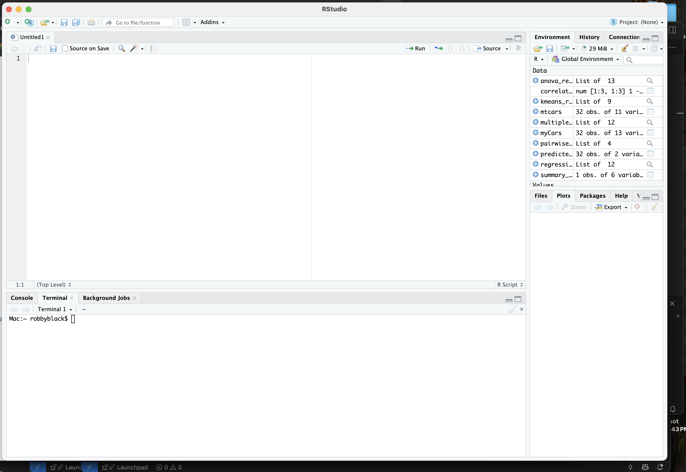

For this assignment I had absolutely no issue getting everything installed on my computer. I have previously completed R Studio assignments, so I already had all the necessary tools and paths installed. For this class, I am doing everything on my Mac using Sequoia OS 15.5. My installed R version is 4.5.1 "Great Square Root". My R Studio version is: 2024.09.1+394.
An R Vector is a basic data structure in R. It stores a sequence of values of all the same type, bumping it up to the highest structured value. Vectors are fundamental to R because most structures are built off of them, such as data frames and lists. They also allow programmers to easily apply operations to the entire set of data without manually looping through the dataset
myMean <- function(assignment2) {
return(sum(assignment) / length(someData))
}
assignment2 <- c(16, 18, 14, 22, 27, 17, 19, 17, 17, 22, 20, 22)
myMean <- function(assignment2) {
return(sum(assignment2) / length(assignment2))
}
result <- myMean(assignment2)
print(result)